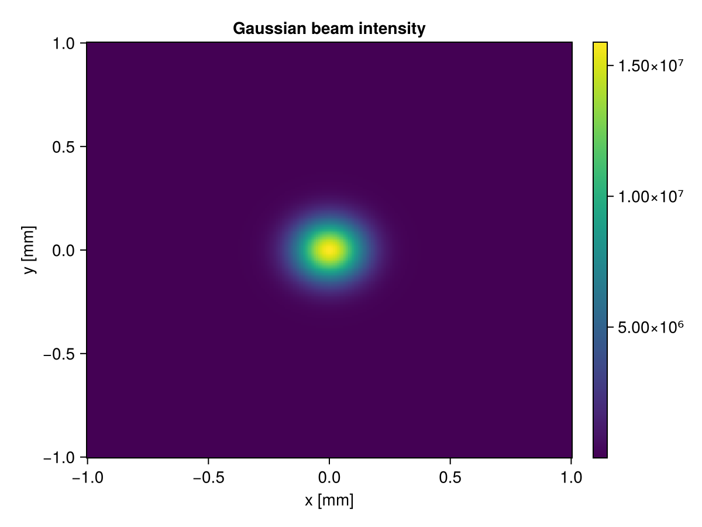
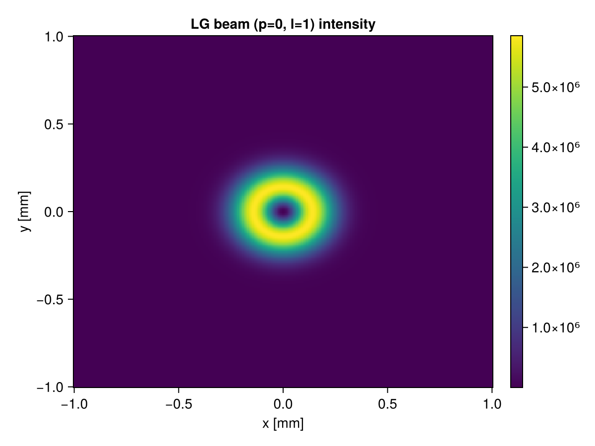

Optikos.jl
A general purpose optics package for Julia.
Types
Grids
Optikos.TransverseGrid — Type
TransverseGrid(x::Vector{Float64}, y::Vector{Float64})A uniform transverse sampling grid for field representation.
Arguments
x: x-axis sample points [m]y: y-axis sample points [m]
Fields
x,y: coordinate vectors [m] (Vector{Float64})Nx,Ny: number of sample points (Int)dx,dy: sample spacing [m] (Float64)
Examples
julia> x = range(-1e-3, 1e-3, length=256);
julia> y = range(-1e-3, 1e-3, length=256);
julia> grid = TransverseGrid(x, y);Fields
Optikos.ScalarField — Type
ScalarField(U::Matrix{ComplexF64}, grid::TransverseGrid, λ::Float64)A transverse scalar field representation type.
Arguments
U: Complex amplitude [V/m]grid: A uniform transverse grid associated with the complex amplitudeλ: Wavelength [m]
Examples
julia> x = y = range(-1e-3, 1e-3, length=256);
julia> grid = TransverseGrid(x, y);
julia> λ = 600e-9;
julia> U = ones(ComplexF64, (256, 256));
julia> field = ScalarField(U, grid, λ);Beams
Optikos.GaussianBeam — Type
GaussianBeam(w0::Float64, λ::Float64; z0=0.0, n_index=1.0)Analytical descriptor of a fundamental Gaussian beam (TEM₀₀).
Fields
w0: beam waist radius [m]λ: wavelength [m]z0: axial position of the transverse beam profile assuming origin at z=0 [m]n_index: refractive index of the propagation medium
Examples
julia> beam = GaussianBeam(200e-6, 632.8e-9);
julia> beam.w0
0.0002
julia> beam.n_index
1.0References
Saleh & Teich, Fundamentals of Photonics, 3rd ed., §3.1
Optikos.LGBeam — Type
LGBeam(w0::Float64, λ::Float64, p::Int, l::Int; z0=0.0, n_index=1.0)Analytical descriptor of a Laguerre-Gaussian beam LG(p, l).
Carries orbital angular momentum of l·ħ per photon. The azimuthal index l determines the topological charge of the optical vortex, and p is the number of radial nodes.
Fields
w0: beam waist radius [m]λ: wavelength [m]p: radial index (p ≥ 0)l: azimuthal index / topological charge (integer)z0: axial position of the transverse beam profile assuming origin at z=0 [m]n_index: refractive index of the propagation medium
Examples
julia> beam = LGBeam(100e-6, 532e-9, 0, 1);
julia> beam.l # topological charge
1
julia> beam.p # radial index
0References
Allen et al., Phys. Rev. A 45, 8185 (1992) Saleh & Teich, Fundamentals of Photonics, 3rd ed., §3.3
Optikos.HGBeam — Type
HGBeam(w0::Float64, λ::Float64, m::Int, n::Int; z0=0.0, n_index=1.0)Analytical descriptor of a Hermite-Gaussian beam HG(m, n).
Rectangular-symmetry transverse modes. The indices m and n_order give the number of nodes along the x and y axes respectively.
Fields
w0: beam waist radius [m]λ: wavelength [m]m: mode index along x (m ≥ 0)n: mode index along y (n ≥ 0)z0: axial position of the transverse beam profile assuming origin at z=0 [m]n_index: refractive index of the propagation medium
Examples
julia> beam = HGBeam(150e-6, 1064e-9, 1, 0);
julia> beam.m
1
julia> beam.n
0References
Saleh & Teich, Fundamentals of Photonics, 3rd ed., §3.3
Functions
Optikos.evaluate — Function
evaluate(beam::GaussianBeam, grid::TransverseGrid) -> ScalarFieldSample a Gaussian beam onto a transverse grid at the plane z = z0.
The complex field amplitude at the waist (z = 0) is:
\[U(x, y) = \exp\!\left(-\frac{x^2 + y^2}{w_0^2}\right)\]
For z ≠ 0, the full Gaussian beam expression including the beam radius w(z), wavefront curvature R(z), and Gouy phase ψ(z) is used:
\[U(x, y, z) = \frac{w_0}{w(z)} \exp\!\left(-\frac{r^2}{w(z)^2}\right) \exp\!\left(-i\left(kz + \frac{kr^2}{2R(z)} - \psi(z)\right)\right)\]
where:
- $w(z) = w_0\sqrt{1 + (z/z_R)^2}$
- $R(z) = z\left(1 + (z_R/z)^2\right)$
- $\psi(z) = \arctan(z/z_R)$
- $z_R = \pi w_0^2 n / \lambda$ is the Rayleigh range
Arguments
beam:GaussianBeamdescriptorgrid:TransverseGridon which to sample
Returns
A ScalarField with unit peak amplitude at the waist.
Examples
julia> grid = TransverseGrid(range(-1e-3, 1e-3, 64), range(-1e-3, 1e-3, 64));
julia> beam = GaussianBeam(200e-6, 632.8e-9);
julia> field = evaluate(beam, grid);
julia> size(field.U)
(64, 64)References
Saleh & Teich, Fundamentals of Photonics, 3rd ed., §3.1
evaluate(beam::LGBeam, grid::TransverseGrid) -> ScalarFieldSample a Laguerre-Gaussian beam LG(p, l) onto a transverse grid at z = z0.
The complex field amplitude at the waist is:
\[U(r, \phi) = \left(\frac{r\sqrt{2}}{w_0}\right)^{|l|} L_p^{|l|}\!\left(\frac{2r^2}{w_0^2}\right) \exp\!\left(-\frac{r^2}{w_0^2}\right) \exp(-il\phi)\]
where $L_p^{|l|}$ is the generalized Laguerre polynomial.
Arguments
beam:LGBeamdescriptorgrid:TransverseGridon which to evaluate
Returns
A ScalarField with the LG modal amplitude.
Examples
julia> grid = TransverseGrid(range(-1e-3, 1e-3, 64), range(-1e-3, 1e-3, 64));
julia> beam = LGBeam(200e-6, 632.8e-9, 0, 3);
julia> field = evaluate(beam, grid);
julia> abs2(field.U[32, 32]) < 1e3 # vortex: zero on axis for l≠0
trueReferences
Allen et al., Phys. Rev. A 45, 8185 (1992) Saleh & Teich, Fundamentals of Photonics, 3rd ed., §3.3
Manual Outline
Examples
Gaussian Beams
using Optikos
using CairoMakie
grid = TransverseGrid(range(-1e-3, 1e-3, 256), range(-1e-3, 1e-3, 256))
beam = GaussianBeam(200e-6, 632.8e-9)
field = evaluate(beam, grid)
fig, ax, hm = heatmap(grid.x * 1e3, grid.y * 1e3, intensity(field))
ax.xlabel = "x [mm]"
ax.ylabel = "y [mm]"
ax.title = "Gaussian beam intensity"
Colorbar(fig[1,2], hm)
fig
Laguerre-Gaussian Beams
using Optikos
using CairoMakie
grid = TransverseGrid(range(-1e-3, 1e-3, 256), range(-1e-3, 1e-3, 256))
beam = LGBeam(200e-6, 632.8e-9, 0, 1)
field = evaluate(beam, grid)
fig, ax, hm = heatmap(grid.x * 1e3, grid.y * 1e3, intensity(field))
ax.xlabel = "x [mm]"
ax.ylabel = "y [mm]"
ax.title = "LG beam (p=0, l=1) intensity"
Colorbar(fig[1,2], hm)
fig